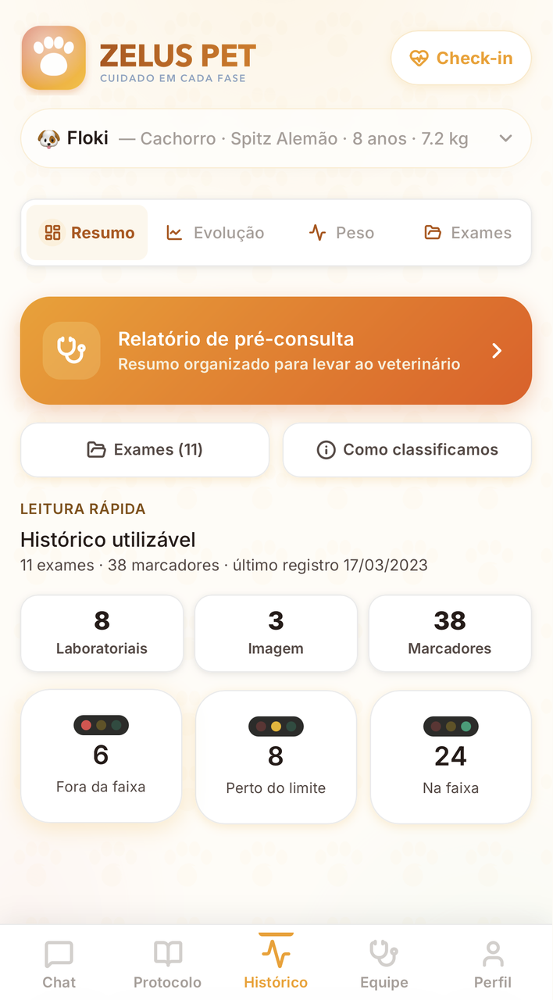
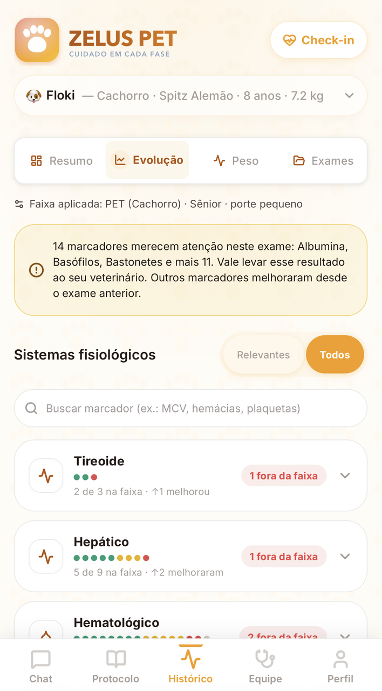
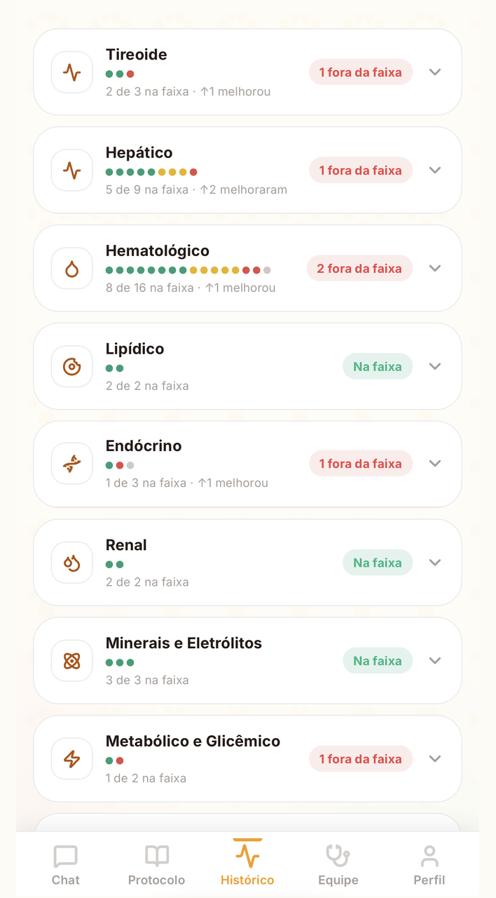

A plataforma multi-pet que lê e classifica marcadores laboratoriais por espécie, e prepara o tutor para a consulta com o veterinário.The multi-pet platform that reads and classifies lab markers by species, and prepares the owner for the vet visit.

Exames que o tutor não sabe ler, resultados soltos e uma régua humana que não serve para cão nem gato. Dá pra perceber tarde demais.Exams the owner can't read, loose results and a human ruler that fits neither dog nor cat. It's easy to notice too late.
A Zelus Pet não guarda o exame do seu pet: ela lê os marcadores por espécie, com a faixa certa, e transforma isso no que o tutor precisa saber antes da consulta.Zelus Pet doesn't just store your pet's exam: it reads the markers by species, with the right range, and turns it into what the owner needs to know before the visit.
Cão não é gato, e nenhum dos dois é gente. A faixa certa por espécie é a diferença entre um número e uma decisão.A dog isn't a cat, and neither is a human. The right range per species is the difference between a number and a decision.
Lê e classifica cada marcador com a faixa de referência da espécie.Reads and classifies each marker with the species' reference range.
A base é o dado laboratorial, organizado e explicado para o tutor.The base is the lab data, organized and explained for the owner.
Um relatório pré-consulta que faz o tempo com o veterinário render.A pre-visit report that makes time with the vet count.
Acompanhamento dos marcadores para pegar mudança cedo.Marker tracking to catch change early.


Faixas e regras revisadas para cão e gato, não uma tabela única.Ranges and rules reviewed for dog and cat, not a single table.
Todos os seus animais e seus históricos no mesmo lugar.All your animals and their histories in one place.
Os dados do pet e do tutor protegidos desde a arquitetura.Pet and owner data protected from the architecture up.